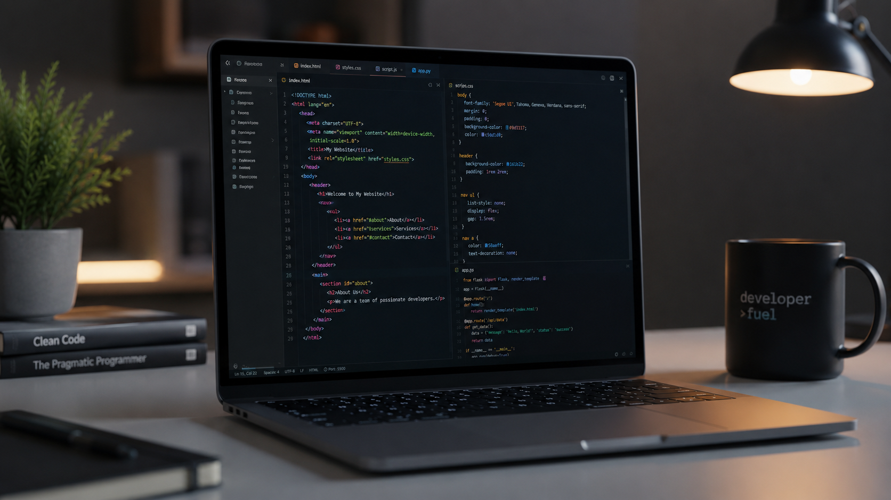

Image generated using ChatGpt (OpenAI), July 2026.
About Me
My name is Trinity Jamison. I am currently studying Computer Science with a conentration in Software development. I enjoy learning new programming languages, solving issues/problems, and building projects.
Why I am Interested in Technology
The main reason technology interests me is because its always changing and there is always something new to learn. Besides enjoying a tough challenge to solve problems, my brother and building my own gaming computer pushed me to learn more about software development and informaton technology. Learning more about software development, in general, has shown me that there is alot of creativity and logical thinking involved with the field itself.
As I continue my education, i hope to learn more about various things within the information technology field. One of my main goals is to build projects that allow me to strengthen my skills and prepare me for a career where i can create meaningful applications.
My Goals
- Earn my bachelor's degree in Computer Science
- Improve my web development and programming skills
- Build a portfolio of software projects
- Start a career as a software developer